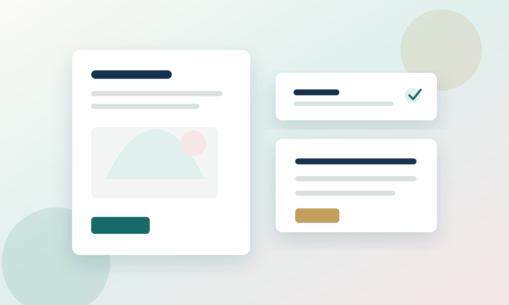

通勤にも使える明るめセット
白ブラウス、落ち感ワイドパンツ、軽いジャケットを組み合わせ、きちんと見えと動きやすさを両立する提案です。
- 訴求: オフィスカジュアル
- 確認: 色名、サイズ展開、在庫
自主制作・架空ファッションEC
サイズ選びに悩む女性が、春服を安心して選べるように、着回し提案、商品一覧、 サイズ不安の解消、返品・配送・在庫案内、CTAまでを整理した自主制作LPです。
このページは転職応募用の自主制作・架空案件です。plus closet、商品名、価格、在庫、サイズ、キャンペーン内容はすべて架空で、 実在企業のロゴ、商品画像、商標画像、素材サイト写真は使用していません。実際の購入機能はありません。
| 応募先想定 | リクルートスタッフィング／京都駅／WEB運用・ECサイト運営サポート |
|---|---|
| 想定業務 | Web更新、EC運用、バナー作成、メルマガ、販促ページ、公開前チェック、数値確認 |
| テーマ | plus closet／サイズに悩む女性向けファッションEC／春の着回しキャンペーン |
| 制作区分 | 自主制作・架空案件。実在企業から依頼された制作物ではありません。 |
白ブラウス、落ち感ワイドパンツ、軽いジャケットを組み合わせ、きちんと見えと動きやすさを両立する提案です。
長め丈カーディガンとテーパードパンツで、腰まわりを自然にカバーする着回しを想定しています。
しわになりにくいブラウスと撥水風の軽いアウターを組み合わせ、天候に左右されにくい春コーデにします。
商品名、価格、サイズ展開、在庫、カラー、着用感を同じ順番で確認できるようにしています。

価格: 4,900円
価格: 6,400円
価格: 8,900円
| サイズ | バスト | ウエスト | ヒップ | 身長目安 |
|---|---|---|---|---|
| L | 90-96cm | 70-76cm | 94-100cm | 158-170cm |
| LL | 96-104cm | 76-84cm | 100-108cm | 160-172cm |
| 3L | 104-112cm | 84-92cm | 108-116cm | 160-174cm |
| 4L | 112-120cm | 92-100cm | 116-124cm | 160-176cm |
| 5L | 120-128cm | 100-108cm | 124-132cm | 162-176cm |
| 6L | 128-136cm | 108-116cm | 132-140cm | 162-178cm |
未使用・タグ付きの場合、商品到着後7日以内に返品相談できる架空設定です。セール品の条件は商品ページで確認します。
通常2-4営業日以内に発送する想定です。キャンペーン期間中は発送目安の表記をLP、商品ページ、メールでそろえます。
カラーごとの在庫を明記し、残りわずかの表現が古くならないよう公開前に管理表と照合します。
横長3枚、正方形3枚、アプリ用小型2枚、メルマガヘッダー2枚として、掲載場所ごとのサイズ・訴求・CTA・確認項目を整理しています。
LPと商品ページの訴求を、メルマガ・アプリプッシュに展開し、最後に集計表と公開前チェックで運用確認までつなげます。